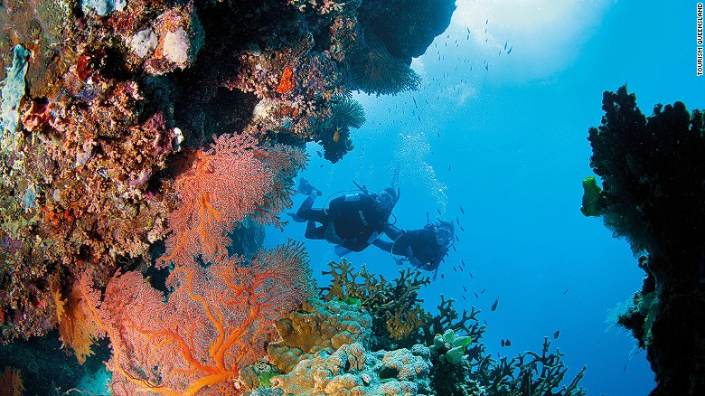
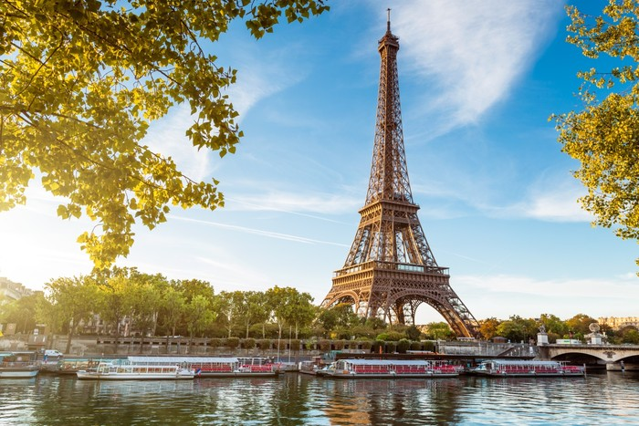
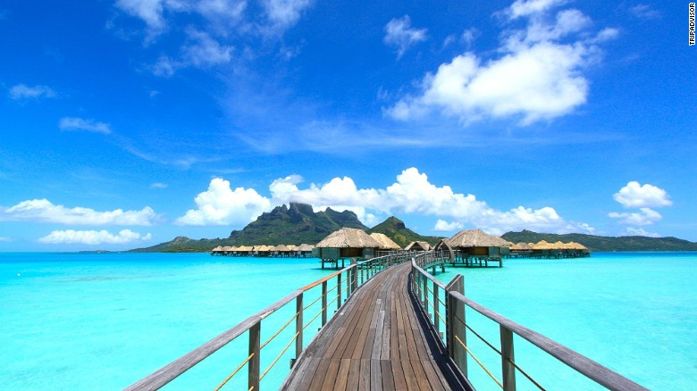
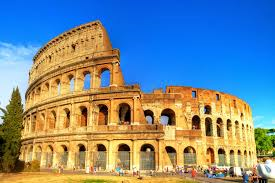
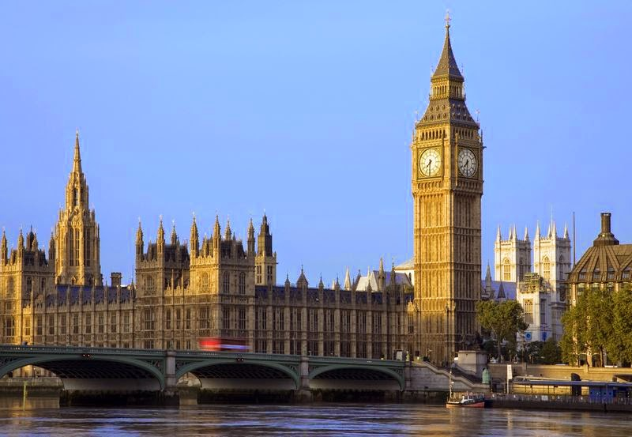
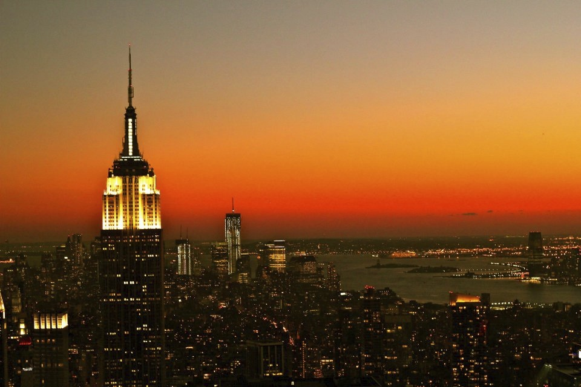
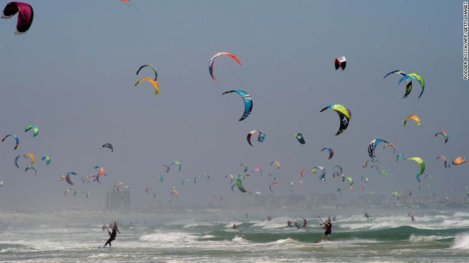

Todas as pessoas já sonharam ao menos uma vez em conhecer alguma outra parte do planeta. Fugir da zona de conforto. Mas muitas vezes nos vemos em duvida de qual destino escolher ou por onde começar. Quais são os melhores lugares para viajar, por isso, decidimos reunir aqui Os 10 melhores lugares para viajar ao redor do mundo. Lista feita peli U.S News & World em 2016 que vale a pena conferir.
Então, vamos lá!!!
A Grande Barreira de Corais é um local que precisa ser visto o quanto antes. Isso porque o local está enfrentando um severo risco de "branqueamento" dos corais, devido ao aumento da temperatura dos oceanos. Segundo o relatório do U. S News, é uma viajem que o quanto antes ser realizadas melhor, já que os corais que hoje vistos podem desaparecer rapidamente.
Apesar de alguns causos do passados como os ataques terroristas, Paris estava em segunda lugar na lista esse ano. Paris, também conhecida como cidade das luzes é um dos lugares que você com certeza precisa visitar ao menos uma vez na vida. Ela nunca deixará de ser um dos melhores lugares para viajar no mundo.
A pequena ilha de bora bora situada na Polinésia Francesa chegou em terceiro lugar na lista este ano. Não foi por nada, as praias paradisiacas são daquelas que vemos somente em filmes, singulares e unicas. Hoje em dia, lodges e grandes resorts ocuparam a ilha com otimas estruturas para turistas que podem investir um pouco mais nas férias.
É um dos melhores lugares da itália para se conhecer. Na cidade, é possivel sentir o espírito da Itália Renascentista. Com diversas galerias de artes, museus, guardam pessoas famosas e valiosas da história da arte. Alguns dos pontos turistico que não pode ficar fora de sua rota são a Ponte Vecchio, o Palácio Pitti, e a Galeria Uffizi. É a cidade perfeita para quem gosta de arte e história.
Uma cidade que sempre está presente nas listas dos melhores lugares para viajar, tem uma beleza entre o fim de março e inicio de abril quando as cerejeiras começam a florescer. Apesar de ser um dos lugares recomendados para se visitar, é necessário ter um orçamento bastante largo para visitar a capital do Japão.
Cusco é o ponto de partida perfeito para quem pretende visitar Machu Picchu, a misteriosa cidade dos incas construida no século 15. É nessa cidada que saia os trens que levam os turistas para conhecer os lugares mais famosos do planeta.
Londres é um dos destinos que precisa ser colocado em sua lista de viajens a ser feita. Por dois motivos, o primeiro porque após a saída da União Européia que deve acontecer dentre dois anos porque pode ser mais dificil conseguir os vistos e segundo porque a Libra - moeda inglesa - está em seu menor valor desde o ano de 1984.
A cidade que fica bonita todas as estações. Dos musicais da Broadway aos magnificos rooftopos, do Highline ao Central Park. Uma cidade que pode ser conhecida em várias viagens porque nunca cansa viajar para a querida Big Apple.
Também situada nos Estados Unidos, mas na praia. É praticamente um paraíso! Maui é a ilha ideal para quem quer curtir as férias o dia inteiro tanto relaxando na areia quanto pegando as melhores ondas do mundo. Além disso, ela contém atrações por todos os cantos. Incrivel!
A Cidade do Cabo é famosa pelas praias e também pela Table Mountain, uma das montanhas mais impressionantes do mundo. Vinícolas, safaris, e até kitesurf são pedidas indispensaveis para quem procurar viajar pelo planeta e quer ter uma viagem incrivel.
O que está esperando, entre em contato com a gente, e não perca a chance de viajar conosco e conhecer todos os lugares aqui citados e muitos mais. É sua chance de ouro. Não perca tempo!!!
@Copyright © 2018 - Todos os direitos reservados - Guia Turístico
Idioma: Português